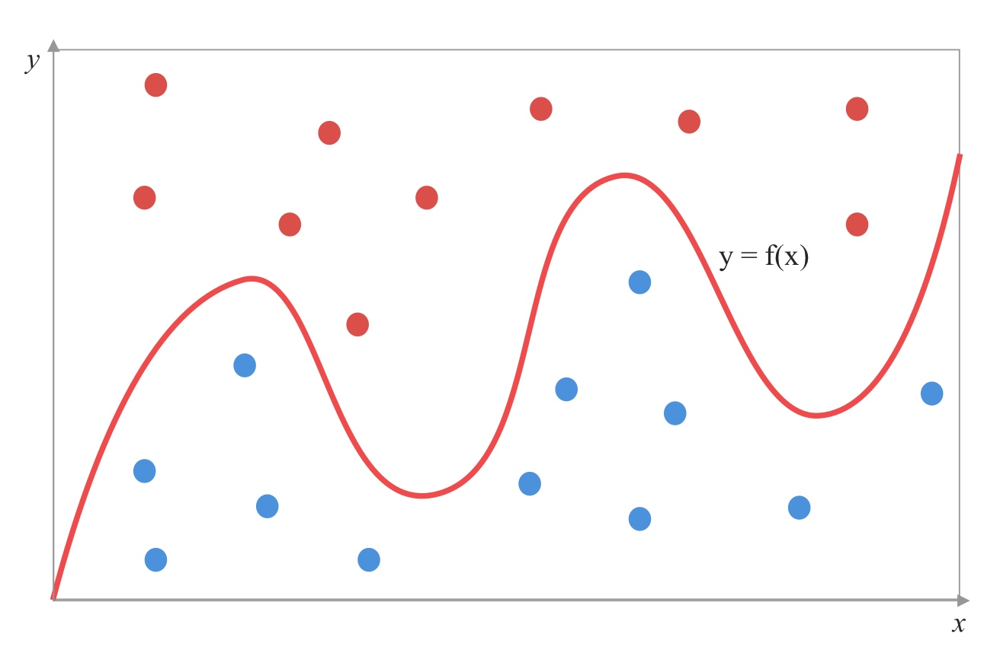
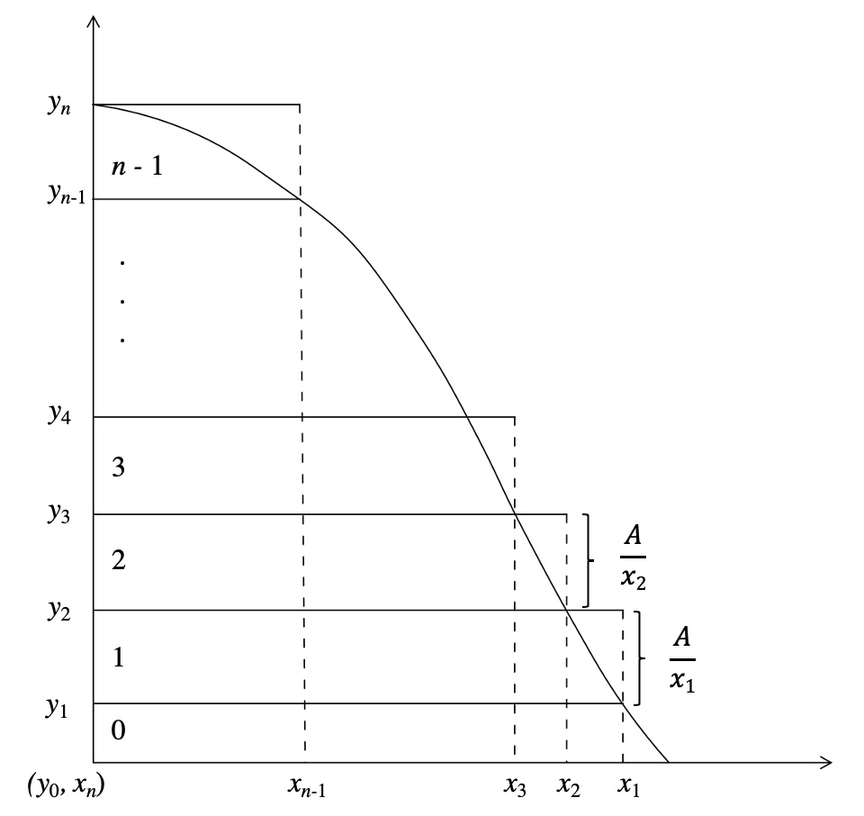

蒙特卡洛模拟与方差缩减技术¶
蒙特卡洛模拟方法介绍¶
蒙特卡洛方法（Monte Carlo method）, 也称为统计模拟方法, 是1940年代中期由于科学技术的发展和电脑的发明，而提出的一种以概率统计 理论为指导的数值计算方法。是指使用随机数（或更常见的伪随机数）来解决 很多计算问题的方法。
20世纪40年代，在科学家冯·诺依曼、斯塔尼斯拉夫·乌拉姆和尼古拉斯·梅特罗波利斯于 洛斯阿拉莫斯国家实验室为核武器计划工作时，发明了蒙特卡洛方法。因为乌拉姆的叔叔经常在 摩纳哥的蒙特卡洛赌场输钱而得名，而蒙特卡洛方法正是以概率为基础的方法。
与之对应的是确定性算法。
关于随机数¶
真正的随机数是使用物理现象产生的：比如掷钱币、骰子、转轮、使用电子组件的噪音、核裂变等等。这样的随机数生成器叫做物理性随机数生成器，它们的缺点是技术要求比较高。
在实际应用中往往使用伪随机数就足够了。这些数列是“似乎”随机的数，实际上它们是通过一个固定的、可以重复的计算方法产生的。它们不真正地随机，因为它们实际上是可以计算出来的，但是它们具有类似于随机数的 统计特征。这样的生成器叫做伪随机数生成器。
正态分布随机数¶
正态分布的随机数是最常用最常见的随机数类型。 此处我们介绍两种最常用最常见的正态分布的随机数的生成方法。
Box-Muller方法¶
1, 基本形式:
设 \(U_1\), \(U_2\) 是两个独立的 \((0, 1)\) 区间均匀分布的随机数，
那么
服从标准正态分布。
2，极坐标形式（Marsaglia polar method）：
首先，产生一组 \([-1, 1]\) 均匀分布的随机数 \(u\), \(v\)；设 \(s = R^2 = u^2 + v^2\), 如果 \(s=0\) 或者 \(s>=1\)， 则抛弃这组 \(u\), \(v\)，
服从标准正态分布。
极坐标形式相对基本形式而言，避免了昂贵的三角函数运算，代价是抛弃了 \(4/\pi - 1 \approx 27.32\%\) 的随机数组。
Ziggurat方法¶
Ziggurat方法属于拒绝采样法的一种。拒绝采样法的基本思想是首先产生一个比预期分布稍大一点的分布（相比预期分布更简单的）的随机样本点 \((x, y)\), 然后测试该点是否属于预期分布内，如果不是，则会丢弃该点，并再尝试生成新的点。
如上图所示, 预期分布的概率密度函数是 \(y=f(x)\), 我们在方框内只需要产生均分分布的随机样本点 \((x, y)\), 如果该样本点落在 \(y=f(x)\) 之下则保留，否则抛弃。这样最后留下的样本点的横坐标 \(x\) 就是满足 预期分布的随机数。
具体就Ziggurat算法而言, 对于在 \(x>0\) 范围内，概率密度函数 \(y=f(x)\) 满足单调递减性质的分布，就可以通过将概率密度函数下方的面积横向切割等分的方式形成采样接收域来实现拒绝采样算法。
Ziggurat算法逻辑
我们先忽视最底层区域上 \(x>x_1\) 区间那部分的问题（涉及到倒退算法），给定两个均匀分布的随机数 \(U_0, U_1 \in [0, 1)\) :
任选一个条形区域 \(0\leq i < n\);
设 \(x = U_0x_i\);
如果 \(x<x_{i+1}\), 则返回 \(x\);
否则， 设 \(y = y_i + U_1(y_{i+1} - y_i)\);
计算 \(f(x)\), 如果 \(y<f(x)\), 则返回 \(x\);
否则重复第一个步骤。
方差缩减技术及其应用¶
蒙特卡洛模拟需要大量的试验才能进行合理准确的估计。如果能够成倍地减少随机模拟中的误差方差，就可以有效地节省随机模拟时间。 本节将着重介绍方差缩减技术中的 控制变量法，及其在期权定价中的实际运用。
控制变量法¶
控制变量法适用于与两个强相关的随机变量。设要估计的随机变量为 \(X\)，其期望为 \(\text{E}(X) = \frac{1}{N} \sum_{i=1}^N X_i\)，其中 \(N\) 为样本个数。 为了提高精度，设另外一个随机变量 \(Y\)，满足
由此 \(\text{E}(X) = \text{E}(X + Y)\)，于是
只要 \(\text{Var}(Y) + 2\text{Cov}(X,Y) < 0\)，则 \(\text{Var}(X+Y) < \text{Var}(X)\)。那么，用 \(\bar X + \bar Y\) 估计的渐进方差就比用 \(\bar X\) 来估计的渐进方差小。
为了更好地利用相关性，引入变量 \(b\) ，使得
则
求出 \(\text{Var}(X + bY)\) 中的最小值点，得
此时
于是，只要能够找到零均值随机变量 \(Y\) 并且使得 \(\rho_{X,Y} \neq 0\)，就可以减少 \(X\) 的估计方差。
在期权中的实际应用¶
在期权定价中，需要两个 相似的，相关性高 的期权A和期权B:
记期权A某次蒙特卡洛模拟下对应的路径 \(i\) 下的现值为 \(A_i\)；
记期权B某次蒙特卡洛模拟下对应的路径 \(i\) 下的现值为 \(B_i\)；
记期权B对应的真值为 \(B\) ， 通常为期权的解析解。
现在构造 控制变量法 所需的随机变量 \(X\) 和 \(Y\):
设 \(X_i = A_i , Y_i = B - B_i\)；
根据之前的公式计算出对应的 \(b\)；
计算出对应的期权定价结果 \(\text{E}(X + bY)\) 对随机变量 \(X\) 进行估计， 替代了原来使用的 \(\text{E}(X)\)。
示例¶
在实际金融市场中，离散型的障碍期权应用更为广泛。然而，解析解对于离散型障碍期权适用范围很小，仅适用于按日观察的情况。因此， 在以下的实证分析中，采用按月观察的向上敲出看涨期权为 期权A，按日观察的向上敲出看涨期权为 期权B, 对他们在相同路径下做100万次蒙特卡洛模拟。
向上敲出期权的基本条款设置如下：
标的价格 |
100 |
行权价 |
80 |
到期时间 |
1年 |
期权A的观察频率 |
每20天按月观察 |
期权B的观察频率 |
按日观察 |
敲出障碍 |
105 |
敲出支付 |
香草看涨 |
未敲出支付 |
0 |
由于 期权B 没有对应的解析解，设 期权A 和 期权B 的真值为1千万次蒙特卡洛的结果，对应的真值结果为：
期权A |
期权B |
|
真值 |
1.1358 |
0.5111 |
采用 控制变量法 后进行100万次蒙特卡洛模拟的对比结果如下：
原始结果 |
控制变量为B1 |
|
期权A的现值 |
1.1392 |
1.1367 |
误差 |
0.0039 |
0.0030 |
其中， 误差衡量公式为 \(\sqrt{\text{Var}(X^*)/n}\)， \(X^*\) 为估计量，\(n\) 为相应估计量的样本数量。 期权A 与 期权B 的相关系数为0.6190。
通过使用 控制变量法，期权的计算误差会有效减小，相关系数越高计算误差越小，而且结果也会更加接近期权的真值。其限制条件也较为明显，在大多数情况下， 对于离散型障碍期权而言，很难找到一个相关度很高的，并有解析解的相似期权。 虽然对应的相似期权B可以通过使用1千万蒙特卡洛模拟计算并作为其真值，但是就总体计算速度而言，并没有达到预期的效率提升效果。